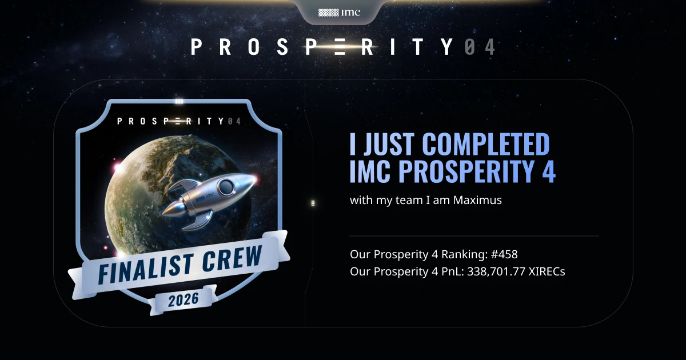
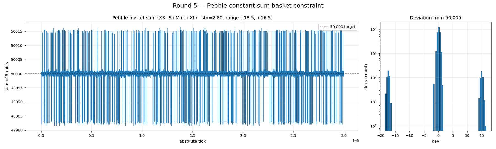
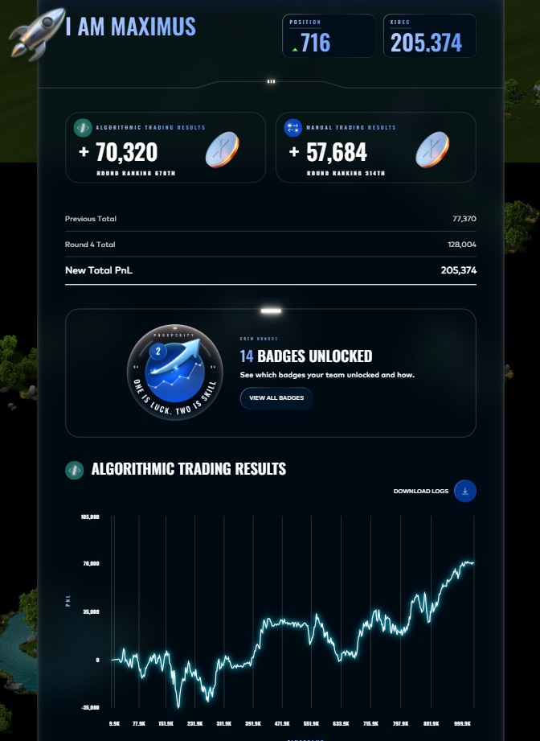

Work · competition · 4 min read
IMC Prosperity 4
Sixteen days, five rounds, one Python file per round traded against the exchange's bots. Our team of three finished 458th of 18,803 teams. The infrastructure we built to get there is the part I would show.

Simulate the exchange, do not replay it
The competition's markets are made by a few scripted bots around a hidden fair value. Replaying historical CSVs assumes your orders would not have changed anything; we instead reverse-engineered the bots and simulated the market. The trick, inherited from the open-source tooling: submit a trader that buys one unit at the first tick and holds, so the exchange's own P&L log reveals the fair-value path.
Brute-force search over quoting formulas then matched the bots' published quotes exactly: 99.7 to 100% for the two bots on one product, 99.9% and 99.0% on another, including the non-obvious discovery that one set of bots quoted proportional offsets, floor(FV × (1 − 3/4000)), rather than fixed ticks. On matched fair-value paths the simulator reproduced the portal's P&L within 0.8% in total.
I refactored the inherited single-file Rust simulator into a per-asset plug-in architecture, added the twelve round-3 products, and for round 5 rebuilt it as a two-layer scenario engine: joint fair-value paths that honour hidden constraints the data analysis had found (five products summing to exactly 50,000; a pair whose sum drifted only slowly, with a within-day standard deviation far below that of either leg; a triplet tied by a looser weighted linear relation), plus three shared Poisson trade-burst processes across 50 products, because trades arrived in synchronised bursts rather than 50 independent streams. Across those changes the simulator grew from 1,872 to 5,923 lines.

On top of the simulator sat an Optuna optimiser with train, validation and test seed splits, a retest on fresh seeds at the end of every study, and anti-overfitting diagnostics: deflated Sharpe ratio, probability of backtest overfitting by combinatorial cross-validation, cluster stability and fANOVA. Round 3 ran five studies and 2,224 trials; the trader we shipped was the out-of-sample winner of the second study (deflated-Sharpe probability 1.0, overfitting probability 0.03).
A browser workshop with thirteen market-microstructure kernels compiled from Rust to WebAssembly (microprice, queue imbalance, order-flow imbalance, mark-outs by counterparty, effective versus realised spread, lead-lag, pair spreads with half-life) ran in a web worker at 5 to 50 milliseconds per panel on 580,000-row rounds.
Results by round
| Round | Algorithmic P&L | Manual P&L | Position after round |
|---|---|---|---|
| 1 | 99,546 | 87,995 | 432 |
| 2 | 98,726 | 204,355 | 176 |
| 3 (leaderboard reset to zero) | 11,141 | 66,229 | 1,998 |
| 4 | 70,320 | 57,684 | 716 |
| 5 (final) | 66,247 | ≈ 67,081 | 458 |

Five things we killed
- An option-implied drift signal that looked like +4,716 died in a 26-trial random search: train and holdout uplift were correlated at −0.700 and not one configuration beat the baseline on both.
- A cross-strike spread trade showing +11,265 was a mid-to-mid accounting artefact; under realistic fills no configuration in the threshold sweep survived; the best made +20 over three days on three trades.
- Delta-hedged short volatility on the option chain returned +166 to +1,033 a day in walk-forward, against planning estimates of +1,320 a round from decay alone and up to +18,600 if the vouchers expired to intrinsic.
- Counterparty identifiers carried no alpha: all nine integration variants lost, the standalone version by 64,044 over three replay days.
- In round 5 a "pulse tilt" overlay was proven a no-op by byte-identical trade histories across three submissions, so the final trader shipped with it disabled.
And one lesson about the tooling: the portal's 1,000-tick preview backtest is dominated by price-path luck. Our round-3 trader showed +17,449 there and made +11,141 in the 10,000-tick final, with the first thousand ticks of the final contributing +817.
Credits
Team of three; I authored about three quarters of the commits. Mine: the simulator refactor and its round-3 and round-5 calibrations (my teammate contributed the round-5 triplet factor model), the Rust/WASM analysis workshop, the optimiser framework, the main trader line for rounds 1 to 3 and the manual-challenge solutions. My teammate led the round-1 bot calibration, the round-4 shipped trader and much of round 5. The backtester and visualiser skeleton were adapted from an open-source release by another team, credited in the repository.